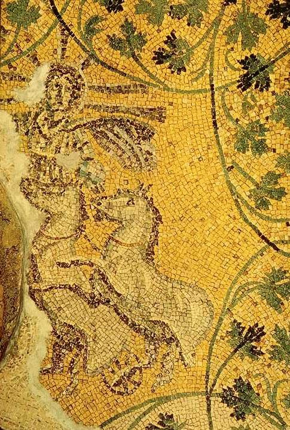

Czyż nie wiecie, że jesteście bogami?
Każdego roku 25 grudnia miliony chrześcijan z całego świata świętują rocznicę narodzin Jezusa z Nazaretu. Jest to jedna z najbardziej znanych historii w dziejach ludzkości. Maria, dziewica, która poczęła za sprawą Ducha Świętego, porodziła swego syna w stajence (lub wg innej wersji w grocie). Nowo narodzonemu Zbawicielowi przybyli oddać pokłon pasterze i trzej magowie. Opowieść ta dla większości ludzi staje się już we wczesnym dzieciństwie „ewangelią”.
Czy jednak owego dnia rzeczywiście narodził się Jezus, czy może datę tę wybrano dlatego, iż dawni „poganie” obchodzili wtedy święto zimowego przesilenia? 25 dzień grudnia to umowna data narodzin nie tylko Jezusa, lecz także wielu „pogańskich” bogów, takich jak Ozyrys, Attis, Tammuz, Adonis czy Dionizos. Oni również – jak piszą Picknett i Prince w „The Templar Revelation” – przyszli na świat w skromnych warunkach, na przykład w grocie, a ich narodziny, których świadkami byli pasterze, zwiastowały znaki i cuda, w tym spadająca gwiazda. Tytułowano ich, między innymi, „dobrymi pasterzami” i „zbawicielami ludzkości”.
Obrzędy związane z zimowym przesileniem pojawiły się być może już w epoce kamiennych kręgów megalitycznych. Między 17 a 24 grudnia w starożytnym Rzymie świętowano Saturnalia, które były czasem zabawy i obdarowywania się podarkami. 25 grudnia przypadał również dzień narodzin perskiego Mitry, szlachetnego bóstwa słońca, który przyszedł na świat w ubogiej grocie. 25 grudnia obchodzono też święto ku czci Sol Invictus, rzymskiego bóstwa, łączącego w sobie cechy greckiego Apollina i perskiego Mitry.
Historia Jezusa wykazuje zadziwiające podobieństwa do znanych mitycznych opowieści, zwłaszcza o umierających i zmartwychwstających bogach ze starożytnego Bliskiego Wschodu, których kult rozwijał się równolegle z początkami chrześcijaństwa, lecz był dużo starszy.
Adonis, Attis, Ozyrys i Dionizos cierpią i zmartwychwstają podobnie jak Chrystus
— pisze J. M. Robertson. — Wszyscy ich wyznawcy pragną mistycznego zjednoczenia z bogiem. Wiara zapewnia im nieśmiertelność. Od mitraizmu Chrystus przejmuje symboliczne klucze do nieba i wciela się w rolę zrodzonego z dziewicy Saoshayanta, niszczyciela Zła.
Mit chrześcijański wchłaniał elementy pogańskich kultów. Jezus, podobnie jak bóg-dziecko z opowieści o Dionizosie, przedstawiany jest jako leżące w żłobie niemowlę. Urodził się w stajni jak Horus, syn Izis, bogini-dziewicy, królowej nieba. Niczym Dionizos zamieniał wodę w wino. Jak Asklepios wskrzeszał zmarłych i przywracał wzrok ociemniałym. Jak Attis i Adonis był opłakiwany przez kobiety. Zmartwychwstał, podobnie jak Mitra, z grobu wykutego w skale.
Idee występujące w chrześcijaństwie wspólne są wszystkim lub przynajmniej niektórym starożytnym wierzeniom, gloryfikującym boga-zbawiciela.